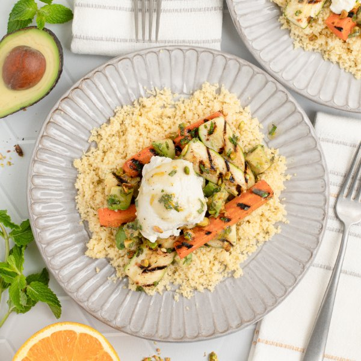

Grilled Carrot-Zucchini Salad with Cumin Dressing, Couscous & Ricotta

Nutrition (per serving)
652.7 kcalCalories
25.3 gProtein
61.1 gCarbs
37.9 gFat
Full nutrition table
| Calories | 652.7 kcal |
| Total fat | 37.9 g |
| Saturated fat | 12.3 g |
| Trans fat | 0.5 g |
| Cholesterol | 54.2 mg |
| Sodium | 188.9 mg |
| Carbohydrates | 61.1 g |
| Fiber | 13.9 g |
| Sugars | 13.4 g |
| Protein | 25.3 g |
| Potassium | 1171.7 mg |
| Calcium | 316.6 mg |
| Iron | 4.1 mg |
| Vitamin A | 870.9 IU |
| Vitamin C | 45 mg |
| Vitamin D | 10.6 IU |
Cookware
Ingredients
- 1avocado
- 4 mediumcarrots
- 16 fl ozchicken or vegetable broth
- 1 small pkgfresh mint
- 1orange
- ¼ cuppistachios, unsalted
- 1 (15 oz) pkgricotta cheese
- 1 cupwhole wheat couscous
- 2 mediumzucchini squash
- black pepper
- cumin, ground
- Dijon mustard
- extra virgin olive oil
- garlic powder
- honey
- salt
Steps
- In a medium saucepan, bring broth to a boil. Once boiling, remove from heat, add couscous, and stir to combine. Cover and let stand for 10 minutes; fluff with a fork right before serving.16 fl oz (2 cups) chicken or vegetable broth
1 cup whole wheat couscous - Meanwhile, wash and dry the fresh produce.4 medium carrots
2 medium zucchini squash
1 orange
1 small pkg fresh mint
1 avocado - Peel, trim, and quarter carrots lengthwise, then halve crosswise; place in a medium bowl.
- Trim zucchini and quarter lengthwise, then halve crosswise; add to the bowl with the carrot.
- Preheat a grill pan, outdoor grill, or skillet over medium-high heat.
- While the pan heats up, drizzle veggies with oil, season with spices, and toss to coat.2 tbsp extra virgin olive oil
½ tsp garlic powder
½ tsp salt
¼ tsp black pepper - Once the pan is hot, add the veggies and grill, turning occasionally, until lightly charred and fork-tender, 6-8 minutes. Transfer to a plate and let cool, 5 minutes. (Reserve bowl for the next step.)
- Meanwhile, zest and juice orange into the reserved bowl; add oil, Dijon, honey, and spices. Whisk to combine the dressing.4 tsp extra virgin olive oil
2 tsp Dijon mustard
1 tsp honey
1 tsp cumin, ground
½ tsp garlic powder
½ tsp salt
¼ tsp black pepper - Pick mint leaves off the stems; discard stems and mince the leaves. Add to the bowl with the dressing.
- Roughly chop pistachios and add to the bowl; set aside.¼ cup pistachios, unsalted
- Just before serving, halve and pit avocado; scoop out with a spoon and medium dice the flesh. Add to the bowl, along with the grilled veggies, and stir to combine the salad.
- To serve, divide couscous and grilled veggie salad between plates or bowls; top with ricotta and drizzle with remaining dressing from the bowl. Enjoy!1 (15 oz) pkg ricotta cheese